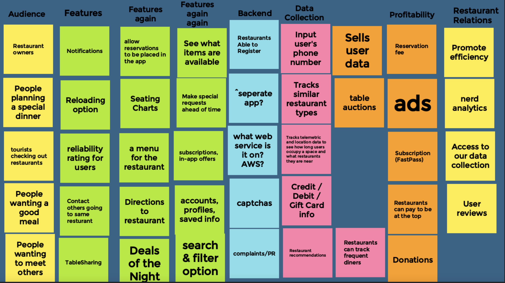
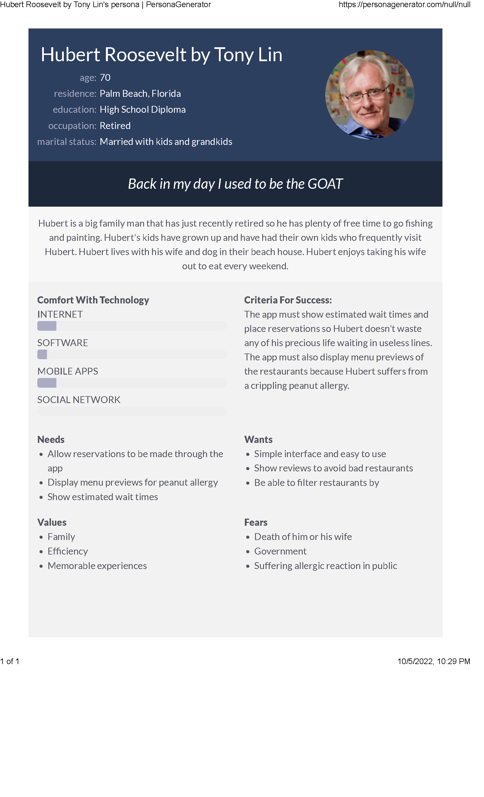
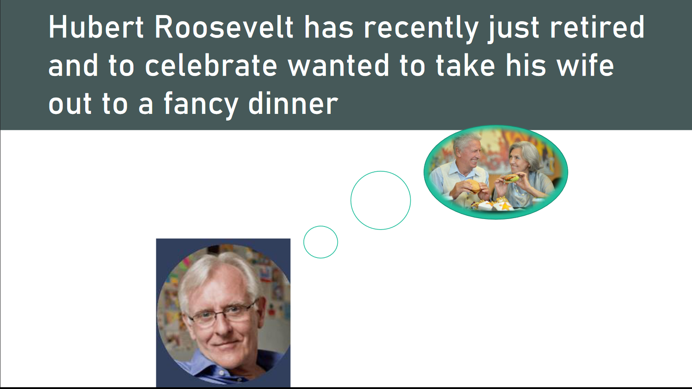
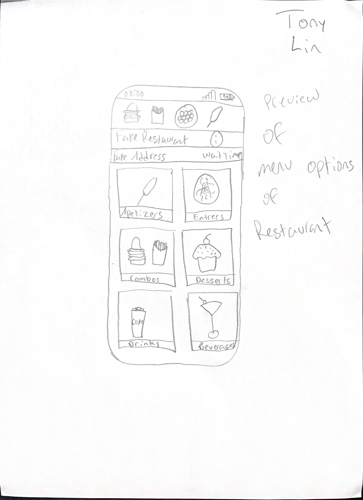
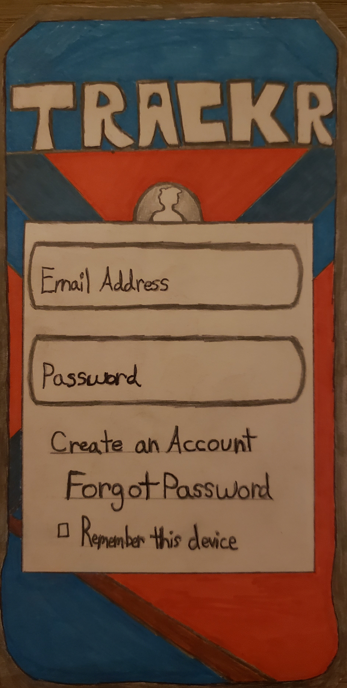
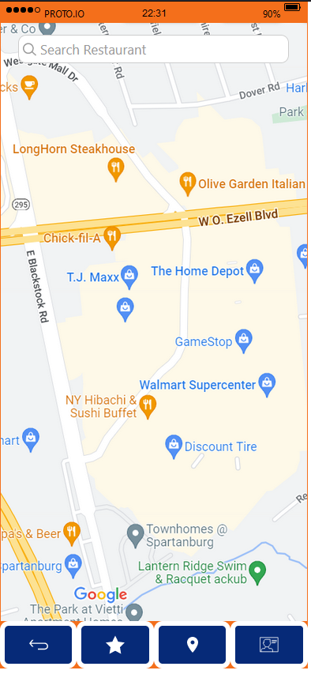

Problem Statement:TRACKR

Consumers are frustrated by long and uncertain wait times at restaurants and the lack of choice in their dining experiences. Restaurant owners and staff are frustrated by conventional reservation systems and uncertainty involving customer satisfaction. A more efficient solution for managing customer preference and reservations should be available on the market.
Affinity Diagram:TRACKR
My group and I worked together to brainstorm all things related to our app TRACKR.
5 Personnas for TRACKR
5 personnas for a typical TRACKR app user.
Storyboard
A storyboard for a user.
Sketches
5 Rough ideas of how the application may look.
Paper Prototype
A paper walkthrough of the potential look of every screen in the application.
High-Fi Prototype
A scenario and tasks and the outcome of usability tests.